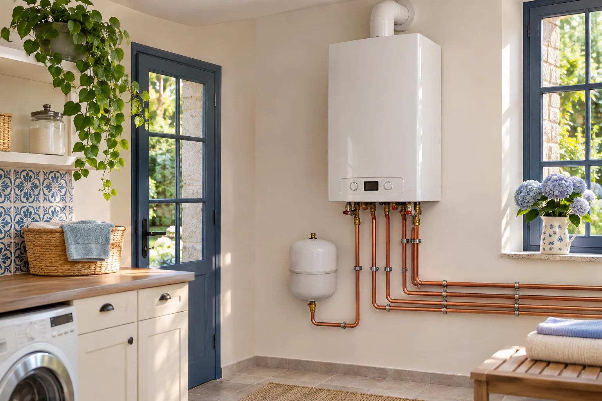
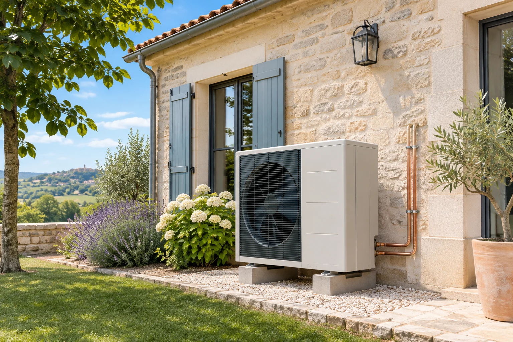

Choisir une installation cohérente
Nous étudions et réalisons votre installation de chauffage à Pineuilh, du remplacement d’un appareil à un système complet. Nous tenons compte des équipements existants et des usages de votre bâtiment.
Du remplacement d’une chaudière à une installation complète, nous vous accompagnons dans votre projet.


Nous étudions et réalisons votre installation de chauffage à Pineuilh, du remplacement d’un appareil à un système complet. Nous tenons compte des équipements existants et des usages de votre bâtiment.
Fioul et biofioul, gaz, bois, granulés, électricité, solaire ou pompe à chaleur : nous vous accompagnons dans le choix d’une solution adaptée à votre projet.
Nous prenons en charge le remplacement de chaudière, puis la maintenance et l’entretien de vos équipements. Pour une panne ou un entretien, contactez notre bureau avec la référence de votre appareil.
Nos références publiées comprennent des chaudières à condensation, des installations à granulés et le chauffage au gaz du restaurant Côté Bastide à Sainte-Foy-la-Grande. Parlons de votre propre installation.